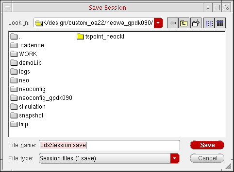

Saving and Restoring Window Positions in Virtuoso
You can save the current position of design windows and forms. The exact information saved depends on your application.
To save window and form positions:
-
From the CIW, choose Options – Save Session.
The Save Session form appears.The default location appears in the Look in field. The default name appears in the name field. The type is Session files (*.save). - In the Look in field, change the directory location for the saved session file.
- In the name field, type a different name for the saved session file.
-
Click OK.
The program saves session settings to the specified file.
Restoring Window Positions of the CIW
To restore the window and form positions saved from a previous session:
-
Start the Cadence software using the
-restoreoption as follows:startupCmd -restore session
where startupCmd is your startup command and session is the session file name that you saved previously.
For example, to start the virtuoso binary and restore the settings saved in the default cdsSession.save file, type:
virtuoso -restore cdsSession.save
Saving and Restoring the Position of the CIW Using SKILL
To save and restore the position of the CIW:
- Move the CIW to the desired location and resize it the way you want it.
-
Note the
hiResizeWindowcommand that the program writes to yourCDS.logfile:cat ~/CDS.log
For example:\a hiResizeWindow(window(1) list(532:0 1257:193))
-
Type the
hiResizeWindowcommand as it appears (everything after the\a) in your.cdsinitfile to cause the program to move and resize the CIW according to these settings the next time you run it.
Related Topics
Return to top